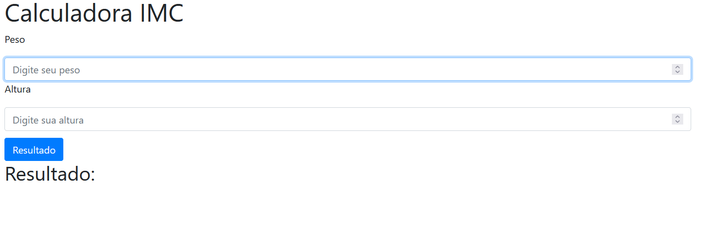
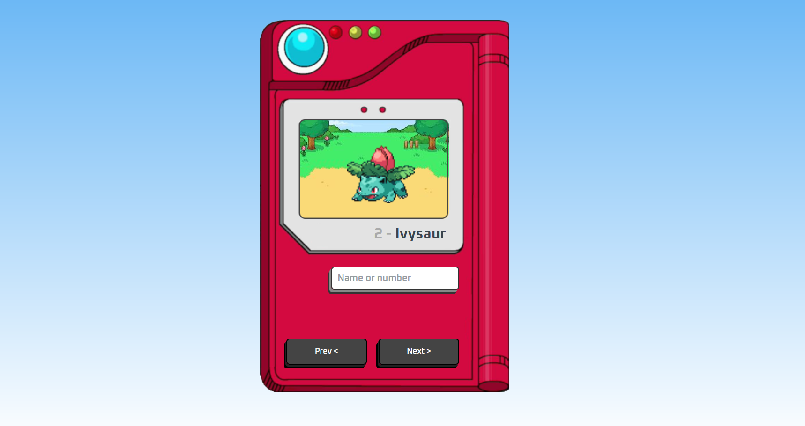
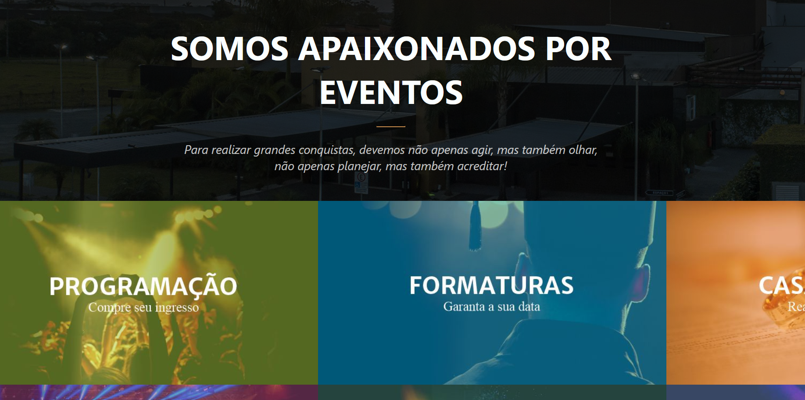
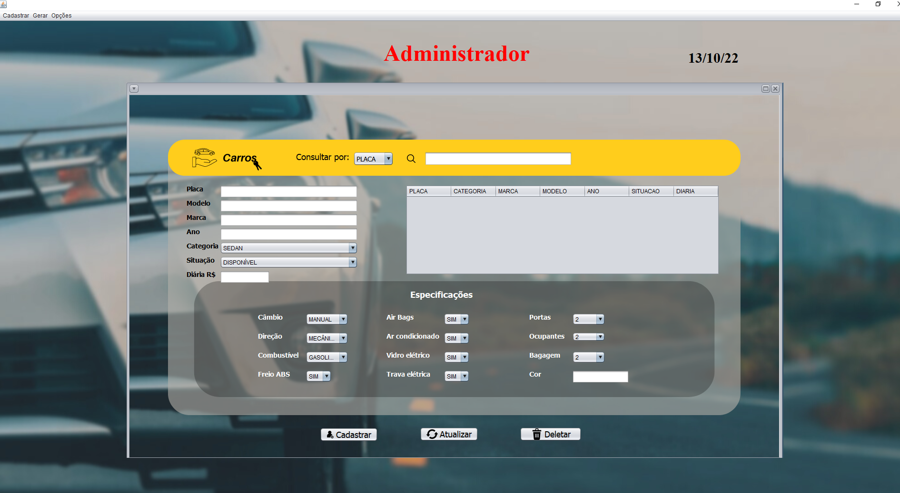

< APRESENTAÇÃO >
Olá, meu nome é Pedro e eu tenho 25 anos. Sou natural de Porto Alegre, mas vivi a vida inteira em farroupilha na serra gaúcha, recentemente me mudei para Floranópolis para estudar na UFSC .
Estudo Filosofia na universidade,
escolhi o curso, não pelo mercado de trabalho
, mas pelo amor que eu tenho a matéria, estou cada vez mais
interessado nos assuntos que estudo.
Quanto a programação, meu primeiro contato com programação foi no ensino médio, no CETEC/UCS . Lá, fiz um técnico em programação, anexo ao ensino medio, que eu não consegui completar por problemas médicos, o que me doeu muito, pois eu fiquei completamente apaixonado pela área, entretanto, agora que me mudei para Florianópolis, resolvi retomar os estudos nesta área que tanto me encantou e, com isso, fiz:
< FORMAÇÃO>
Curso jovem programador // SENAC {
MÓDULO I - Tive uma introdução ao
Java, na qual, além de aprender uma nova linguagem, pude aprimorar
as habilidades em lógica de programação que havia cultivado no curso
técnico.
MÓDULO II - Aprimorei o Java e
aprendi a Java Web, mais focado no Spring Boot.
}
Do zero ao primeiro site // HAPPY POA +PRATI
{
Tive uma introdução ao HTML e ao CSS, além de
treinar em diversos exercícios, pude aprimorar o que havia aprendido
de HTML por conta própria, além de ter uma introdução a Javascript.
}
Ou, de modo formal:
Ensino Médio no Centro Tecnológico da Universidade de Caxias do
Sul
Técnico em Programação – CETEC –
Período : março de 2013 a junho de 2014.
Curso básico em gestão de empresas – CETEC –
Período: março de 2013 a dezembro de 2013.
Graduação em Psicologia – Universidade de Caxias do Sul – interrompido –
Período: março de 2016 a dezembro de 2018.
Graduação em Filosofia – Universidade Federal de Santa Catarina
– Período: junho de 2021 em andamento.
Curso Jovem programador – SENAC Florianópolis
–
Período: Julho de 2022 a dezembro de 2022.
Curso Programação Front-end +Prati 1º módulo
–
Período: Junho de 2022 a dezembro de 2022.
Curso Programação Front-end +Prati 2º módulo
–
Período: Cursando.
</ FORMAÇÃO>
//Para além do estudo formal, àquela primeira introdução a programação que eu tive em DELPHI, serviu como uma base para que eu pudesse pesquisar sozinho e basear, na lógica, meus novos aprendizados. Sempre tive interesse em programação, mas antes dos cursos que fiz recentemente, eu pesquisava por conta própria.
< HABILIDADES E PERFIL >
Tive algumas experiências profissionais, a mioria delas com atendimento ao cliente, área que me identifico; Sou bom e gosto de lidar com pessoas .
Já trabalhei com:
Estágio no projeto Negócio Negócio do SEBRAE (parceria entre UCS e
SEBRAE)
Atividades: Arquivo de documentos, digitação de dados
das empresas no sistema SEBRAE, fechamento do total de empresas
atendidas pelo projeto no final do mês.
Novembro de 2015; Maio de 2016.
Bolsa no PPGA/UCS(Programa de pós-graduação em administração)
Atividades: Tabulação das pesquisas do doutorado,
busca de artigos em bases de dados acadêmicos.
Junho de 2016; Dezembro de 2017.
Atendente de Café da Manhã no Hotel Holiday Inn Express
Farroupilha
Atividades: Atendimento ao público, reposição do
buffet, atendimento às mesas, limpeza pós turno, compra e
recebimento de mercadorias. No hotel tendo feito os cursos:
Fundamentos da Verdadeira Hospitalidade Holiday Inn Express Smart
Host Human Rights Problem Handling (I. L.E.A.D.) People Tools.
Outubro de 2018; Junho 2019.
Operador de Televendas nas Lojas Colombo
Atividades: Atendimento ao cliente pelo telefone,
auxiliar clientes com dúvidas sobre o site colombo, fazer o
acompanhamento das vendas realizadas.
Junho de 2019; Dezembro 2019.
Apesar da maior parte de minha experiência ser com vendas ou atendimento ao cliente, pretendo transicionar de área para uma que gosto mais e que me traz mais interesse: a área de desenvolvimento.
</ HABILIDADES E PERFIL >
Adoro aprender coisas novas e me sinto extremamente motivado por um desafio intelectual. Minha curiosidade pode ser expressa pela minha ampla gama de interesses.
Mas vamos ao que interessa, meu portfólio :
</ APRESENTAÇÃO >
< PORTFÓLIO >
//Está ainda em construção, mas alguns dos projetos são:
CALCULADORA SPRING BOOT DE IMC

Uma calculadora que pega os dados no front end, clacula no back e devolve o resultado
POKEDEX EM JS

Uma pokedex baseada em javascript que utiliza de API's já existentes para mostrar o pokemon, seu nome e seu número
PROJETO MAGIC GARDEN EVENTOS

Um site de um centro de eventos fictício construído em conjunto no curso jovem programadoir do SENAC. Ele conta com diversas páginas e um sistema, ainda em fase de implantação, de reservas de horários
Projeto ALOcar

Esse projeto foi um projeto de conslusão do curso jovem Programador, um projeto feito em 5 pessoas, 4 ficaram responsáveis por cada uma das telas do projeto e um f pela conexão ao banco de dados e sua engenharia. O projeto foi um programa feito em java, para gerenciar uma locadora de carros fictícia.
< EVENTOS >
Evento HACKATHON JOVEM PROGRAMADOR
Evento no qual o time que eu participei ficou em 3º lugar no estado. Fomo premiados no eixo saúde e ambiente pelo desenvolvimento do projeto SUSi, uma inteligencia artificial que prmoveria maior facilidade de diálogo entre o SUS e o usuário, com intuito de diminuir os índices de absenteísmo no sistema público de saúde
A equipe Patos Quanticos teve o mascote desenhado pela talentosíssima artista: @laosanyan

O projeto SUSi, foi construído em conjunto no período de uma semana com encontro online que duraram o dia inteiro durante uma semana. O logo foi desenho meu.
No vídeo abaixo, eu, o pitcher do projeto, apresentei a ideia para a banca:
O vídeo já está com o "timestamp" correto do momento da apresentação
</ EVENTOS >
</ PORTFÓLIO >
< CONTATOS >